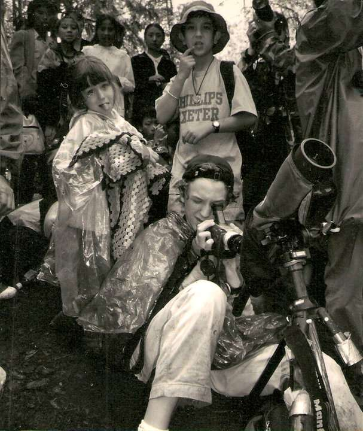

Blog
The assumption that making a few photos makes you a photographer. This is a complex, all-consuming career that demands boundless energy, thick skin for rejection, a lot of persistence, patience and the ability to withstand uncomfortable situations. It is an incredibly competitive profession, where you have to create your own opportunities and craft your own path. If you are able to work harder than everyone else, come up with a vision that is uniquely yours, and most importantly, if you are able to give your work a sense of purpose, this is, without a doubt, the most rewarding profession.
